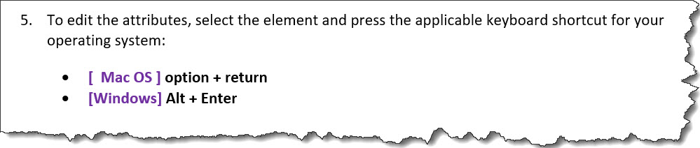

<choices>
The <choices> element contains a list of
choices. Each choice represents a way to
complete the current step.
Usage information
The <choices> element provides information
when there is more than one way to complete a step. It is a
list.
Specialization hierarchy
The <choices> element is specialized from <ul>. It
is defined in the task module.
Attributes
The following attributes are available on this element: universal attributes.
Example
The following code sample shows how the
<choices> element can be used when
different operating systems have different keyboard shortcuts. In
this scenario, flagging is used to render labels for the different
operating systems.
<step>
<cmd>To edit the attributes, select the element and press the
applicable keyboard shortcut for your operating system:</cmd>
<choices>
<choice platform="mac-os"><uicontrol>option + return</uicontrol></choice>
<choice platform="windows"><uicontrol>Alt + Enter</uicontrol></choice>
</choices>
<stepresult>The <wintitle>Attributes</wintitle> view is displayed.</stepresult>
</step>The rendered output might look like the following:
